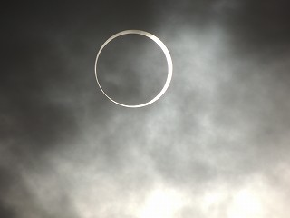
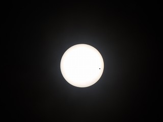
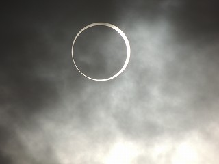
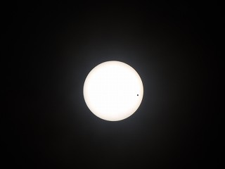

最終更新:2013.1
All rights reserved by Shibuya Makuhari High School Astronomy Club
現在天文部では、新しいデジタル一眼レフカメラを導入し、天体写真の撮影に力を入れております。2012年は金環日食や、金星の太陽面通過などのとっても大きなイベントがありました。
 



次回の金星の太陽面通過は2117年12月11日(！)......